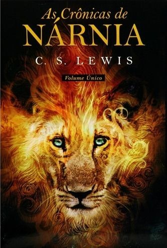
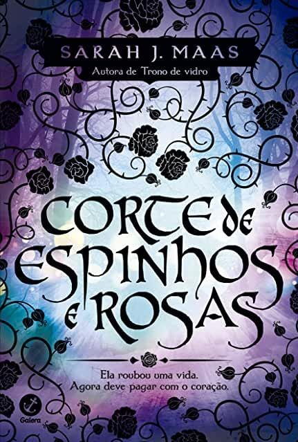
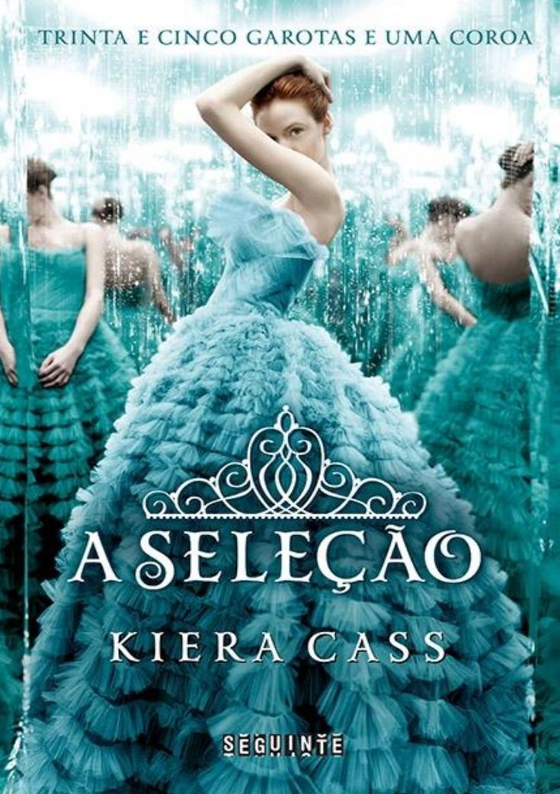
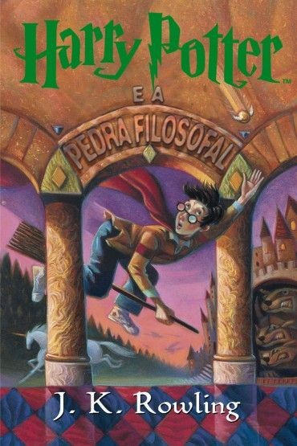
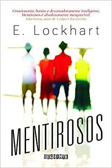
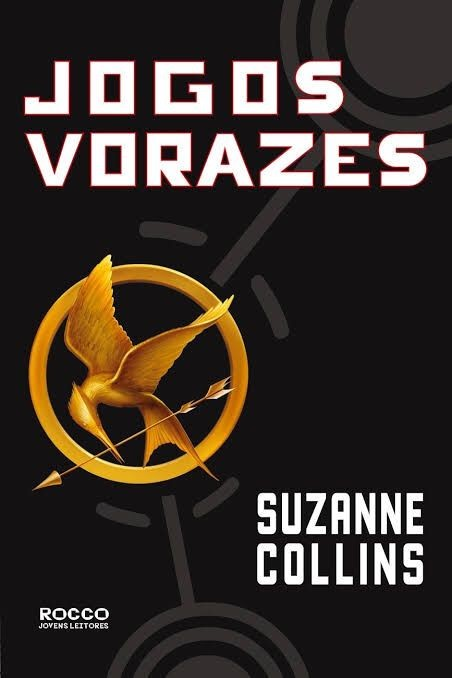

Você sabia?
O papel de Lílian Potter , mãe de Harry Potter ,foi oferecido à escritora j.k Rowling, mas a escritora recusou a oferta.
Corte de Espinhos e Rosas foi a segunda série de Sarah, é uma releitura de a Bela a Fera.
J.K. Rowling, autora de “Harry Potter”, escreveu todos os livros da saga à mão. Por falar em Harry Potter, Os três livros mais lidos no mundo são: a Bíblia, “O Livro Vermelho”, de Mao Tsé-Tung, e “Harry Potter”.
Nos livros de Sherlock Holmes o protagonista nunca chega a dizer a célebre frase "Elementar, meu caro Watson!", pela qual é internacionalmente conhecido.
Ler prolonga a vida, as pessoas que dedicam pelo menos 30 minutos do seu dia a ler livros vivem mais tempo em comparação com aquelas que não leem. O estudo foi produzido por 3 investigadores da Yale University School of Public Health


Booktok
Você conhece o BookTok? O lado literário do TikTok (aplicativo mais baixado em 2020) é como se fosse um grande grupo de leitura on-line. A hashtag #booktok já conta com 6,5 bilhões de visualizações, onde criadores de conteúdos dão recomendações de seus livros favoritos e falam sobre os livros que os fizeram chorar, dar gargalhadas ou sofrer por dias. Veja, aqui, 3 livros que estão fazendo sucesso no BookTok.
VERMELHO, BRANCO E SANGUE AZUL, DE CASEY MCQUISTON: Esse new adult ganhou popularidade por ser um romance de leitura leve, engraçada e com aquela relação hate to love queridinha pelos leitores.
CORTE DE ESPINHOS E ROSAS, DE SARAH J. MAAS: Mais conhecido no BookTok pela sigla “Acotar”, Corte de Espinhos e Rosas é o primeiro livro de uma série de romances de fantasia para adultos: “Depois de anos sendo escravizados pelas fadas, os humanos conseguiram se libertar e coexistem com seres místicos.”
OS 7 MARIDOS DE EVELYN HUGO, DE TAYLOR JENKINS REID: Dizer que esse livro foi feito para as almas fofoqueiras talvez seria raso demais, mas não deixa de ser verdade. Nessa trama apaixonante, a estrela de cinema Evelyn Hugo decide contar toda a sua história de vida para a jornalista Monique Grant, depois de passar anos sem se dirigir à imprensa.


Importância da leitura
A leitura estimula o raciocínio, melhora o vocabulário, aprimora a capacidade interpretativa, além de proporcionar ao leitor um conhecimento amplo e diversificado sobre vários assuntos.
Ler desenvolve a criatividade, a imaginação, a comunicação, o senso crítico, e amplia a habilidade na escrita.
A criação do hábito de leitura, especialmente quando se inicia durante a infância, proporciona desenvolvimento emocional e intelectual, enriquece o vocabulário e permite que as crianças desenvolvam senso crítico.
A leitura é um exercício que enriquece, exercita o cérebro e colabora com discussões produtivas, nos tornando mais tolerantes as diferencias do mundo.
